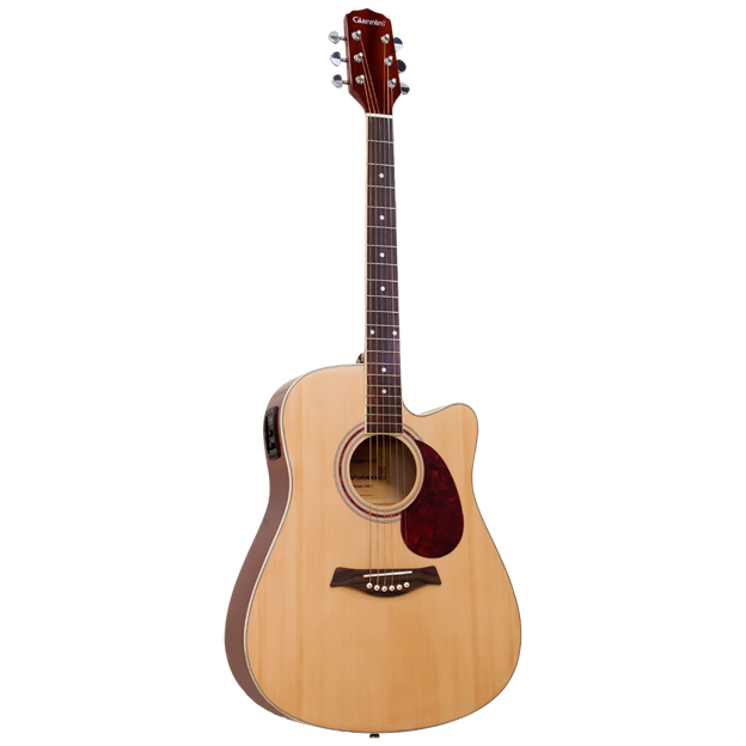

Santo Expedito
Tocar e Cantar
Reconhecer que todo dom e talento vem de Deus. tanto os que cantam como os que tocam digam: todas as minhas fontes vem de ti. (Salmos 87-7).
Música Gregoriana
Começou nos séculos VIII e IX, nas regiões da Europa Cristã por nosso predecessor, São Gregório Magno, com esplendor sempre acompanhado de seu instrumento musical, "o orgão".
